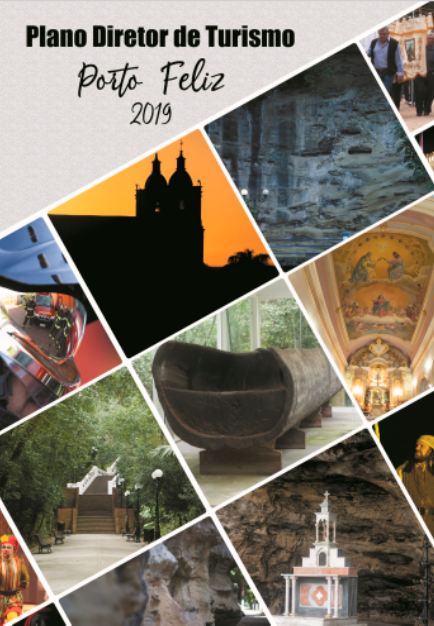

Coluna do JEB
Nós Temos Nosso Plano De Turismo!
Conforme O ARAUTINHO anunciou na tira do mês de março, há alguns meses está pronto o Plano Diretor De Turismo – PDT de Porto Feliz! Foi construído por um grupo de trabalho formado por servidores públicos, empresários, conselheiros do COMTUR e membros da sociedade civil. Eles foram orientados pelo SENAC SÃO PAULO num processo formativo, que proveu toda metodologia e mediação necessárias para validar o documento.
Trata-se de um planejamento para o futuro de nossa cidade, um documento que tem propostas essenciais para o desenvolvimento da atividade turística. E, além de propostas para o futuro (orientadas para a sustentabilidade econômica, social, ambiental e cultural), estão registradas percepções e aspirações da coletividade. O objetivo é, com o pleno desenvolvimento da economia turística, enquadrar Porto Feliz num futuro próximo como Município de Interesse Turístico – MIT. Para que depois, a longo prazo, seja classificada como uma das Estâncias Turísticas do Estado de São Paulo!
Ele pode ser acessado neste link: https://leismunicipais.com.br/a/sp/p/porto-feliz/lei-ordinaria/2019/568/5680/lei-ordinaria-n-5680-2019-institui-o-plano-diretor-de-turismo-do-municipio-de-porto-feliz-conforme-especifica-e-da-outras-providenciasJEB (José Eduardo Bertoncello)
trabalha na Biblioteca Municipal e participa do Conselho de Cultura